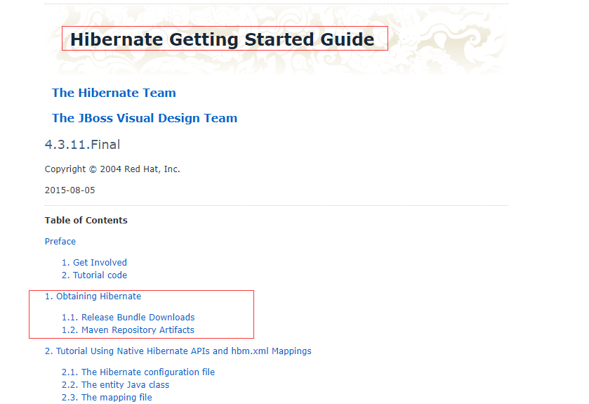
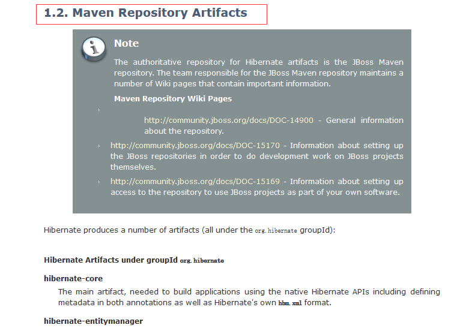
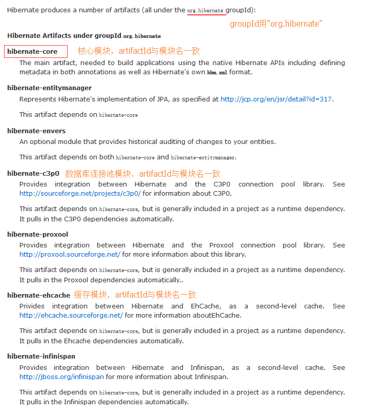
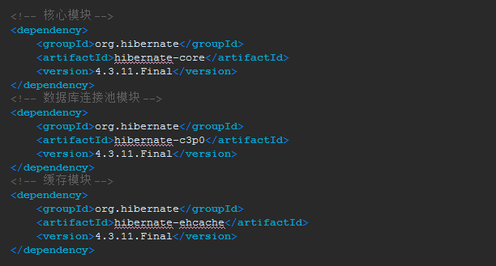
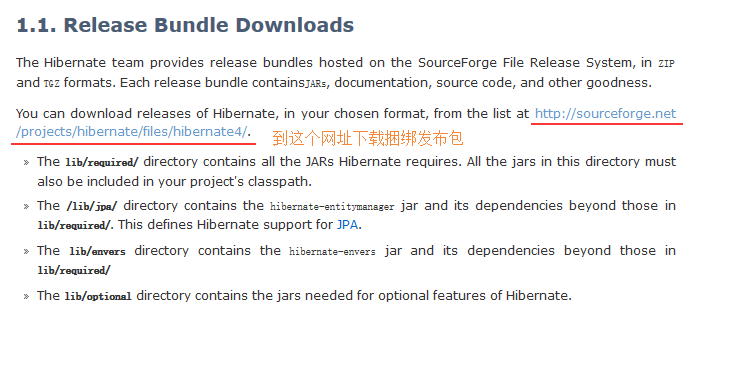

有关hibernate环境的搭建可以参考官方文档的“Hibernate Getting Started Guide”的第一章

第一种方式（推荐）：使用maven
参考1.2. Maven Repository Artifacts章节

hibernate的maven坐标

version个人比较喜欢直接到maven中央仓库去找
pom文件的配置样例如下：

第二种方式：手动导包
参考1.1. Release Bundle Downloads
